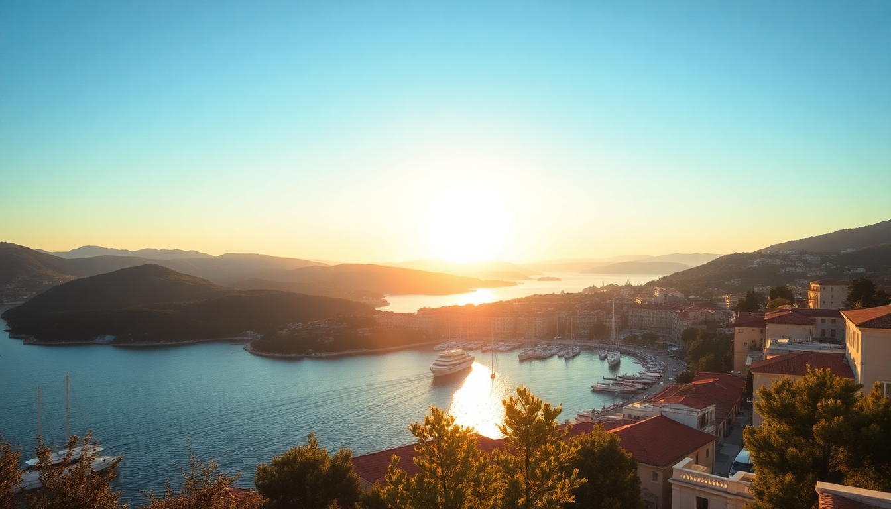

Best Day Trips from Split: Hvar, Brač & Krka

Split is a solid base for exploring the Dalmatian coast, but the real magic happens when you leave the Riva promenade behind. I spent a week here hopping ferries and buses to three of the most popular day trips: Hvar, Brač, and Krka National Park. Each one is doable in a day, but only if you nail the logistics. Here’s what I learned, what’s worth your time, and what you can skip.
Is Hvar worth the ferry ride for a day trip?
Yes, but only if you catch the early catamaran from Split’s port. The Jadrolinija ferry takes about two hours and drops you right in Hvar Town. I went on a Tuesday in June, and by 10:00 AM the town was already buzzing. The main square, St. Stephen’s Square, is pretty but small. The real draw is the fortress above town — a 20-minute uphill walk that gives you the classic view of the Pakleni Islands.
If crowds aren’t your thing, skip the main drag and head to the quieter side streets near the Franciscan Monastery. I grabbed a coffee at Kavana Forum on the square, and while the price was typical for a tourist hub (€4 for a cappuccino), the people-watching was worth it.
- Ferry options: Jadrolinija catamaran (1h 10min, €8-12 one way) or the slower car ferry (2h, cheaper but less frequent)
- Lunch spot: Konoba Menego for local peka-style lamb — book ahead or go at 11:30 AM to beat the rush
- Time budget: Leave Split by 7:30 AM, return by 6:00 PM latest to catch the last ferry
How do you spend a day on Brač without wasting time?
Brač is closer to Split than Hvar — the catamaran to Supetar takes about 50 minutes. From Supetar, you need a bus to Bol, which is another 45 minutes. The famous Zlatni Rat beach is a 15-minute walk from Bol’s center. I found the beach itself underwhelming (it’s a pebble spit, not a sandy paradise), but the water is crystal clear and perfect for swimming.
The real highlight for me was the walk up to Vidova Gora, the highest peak on the Adriatic islands. It’s a steep 90-minute hike from Bol, but the view over Zlatni Rat and the surrounding sea is unmatched. If hiking isn’t your thing, just stay in Bol and wander the old stone streets — they’re far quieter than Hvar Town.
- Getting around: Bus from Supetar to Bol (€4, runs hourly); taxis cost €30-40
- Lunch: Konoba Vinotoka in Bol — try the grilled octopus, it’s the best I had on Brač
- Time budget: First ferry from Split at 6:00 AM, last return around 7:00 PM
Can you really do Krka National Park in a day from Split?
Yes, and it’s the easiest day trip on this list. Most people take a tour bus or drive, but I took the public bus from Split’s main station to Skradin (1.5 hours, €9). Skradin is the main gateway to the park. From there, a short boat ride takes you into the park proper. The boardwalk trail is well-maintained and loops past the main waterfalls in about 1.5 hours. I went in late May, and the water flow was strong — the Skradinski Buk waterfall is genuinely impressive.
The big catch: swimming is banned in the main waterfalls area since 2021. Some people were disappointed, but I found the trails less crowded because of it. If you want to swim, head to the Roški Slap area further upstream, but that adds another hour of walking.
- Bus info: FlixBus and Arriva run multiple daily buses; book a return ticket in advance in summer
- Park entrance: €20-40 depending on season (buy online to skip the line at Skradin)
- Lunch: Restoran Skradinski inside the park — decent but pricey; better to eat in Skradin town before entering
- Time budget: Leave Split by 8:00 AM, return by 5:00 PM
What’s the best way to get between islands without a car?
If you want to combine Hvar and Brač in one trip, don’t. The ferry connections between islands are infrequent and eat up your day. I tried a loop — Split to Hvar, then Hvar to Brač, then Brač back to Split — and spent four hours waiting for connections. Stick to one island per day.
For Krka, no car is needed. The bus from Split drops you at Skradin, and the park has its own boat shuttle. If you’re set on renting a car, I’d only recommend it for Krka (to reach the less crowded Lozovac entrance) or for exploring Split’s nearby coastal towns like Trogir.
- Ferry connections: Check Krilo and Jadrolinija schedules weekly — they change by season
- Car rental: Pick up from Split Airport or downtown; expect €40-60 per day in summer
- Alternative: Book a guided day tour from Split for Hvar or Krka — it simplifies logistics, but you lose flexibility
When should you visit each destination to avoid the worst crowds?
June and September are the sweet spots. July and August are a zoo — especially Hvar Town, where the waterfront becomes a wall of selfie sticks. I visited Hvar on a Saturday in mid-July once, and the queue for the catamaran back to Split was 45 minutes long. Never again.
Krka is busiest between 11:00 AM and 2:00 PM. I arrived at 8:30 AM and had the boardwalk almost to myself. By noon, it was shoulder-to-shoulder. Brač is less crowded overall, but Zlatni Rat fills up by 10:00 AM on sunny weekends.
- Best months: May-June and September for all three
- Worst months: July-August (especially Hvar)
- Time of day: Start any trip by 7:00 AM to beat the tour groups
FAQ
Is it better to book ferry tickets in advance or buy on the day? Buy on the day for Jadrolinija ferries — they rarely sell out. For Krilo catamarans in peak season (July-August), book online 2-3 days ahead, especially for the Split-Hvar route. I learned this the hard way when I had to wait for a later ferry because the 9:00 AM was full.
Can you visit Krka and Plitvice Lakes in the same trip from Split? Technically yes, but don’t. Plitvice is a 2.5-hour drive from Split, and Krka is 1.5 hours. Doing both in one day means 5+ hours on a bus and rushed park visits. I’d recommend two separate days, or choose Krka for a shorter day trip and save Plitvice for an overnight.
Which island is better for a first-time visitor: Hvar or Brač? Hvar, if you want nightlife and a lively town. Brač, if you prefer quiet beaches and hiking. I preferred Brač for the solitude, but Hvar has more restaurants and bars open late. If you only have one day, pick based on your vibe — not on Instagram photos.
Conclusion
- Hvar is best for a lively day with good food and fortress views, but go early and avoid weekends in July.
- Brač offers quieter beaches and the Vidova Gora hike — better for swimmers and hikers than partiers.
- Krka is the easiest day trip from Split, with impressive waterfalls, but arrive before 9:00 AM to beat the crowds.
- Ferry logistics matter more than you think — check schedules a day before and always have a backup plan for the return.
- Skip car rentals for islands; stick to buses and ferries unless you’re heading to Trogir or the mainland coast.